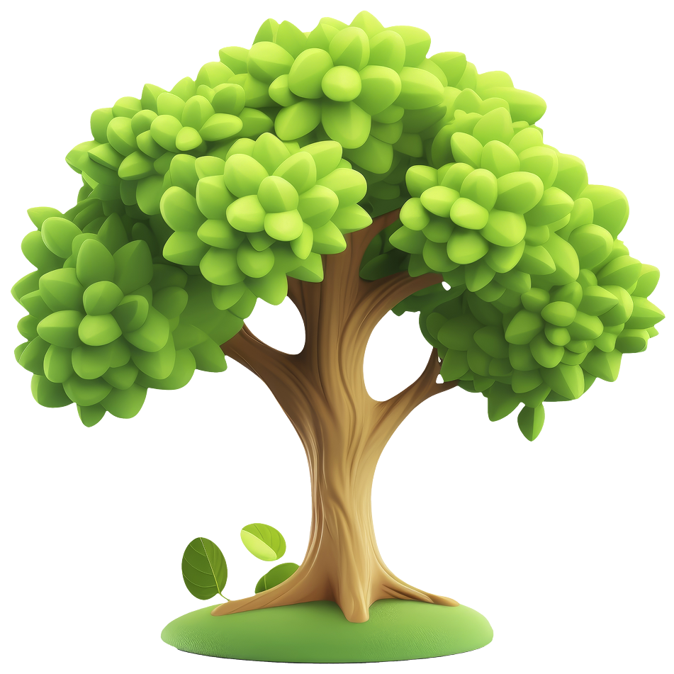
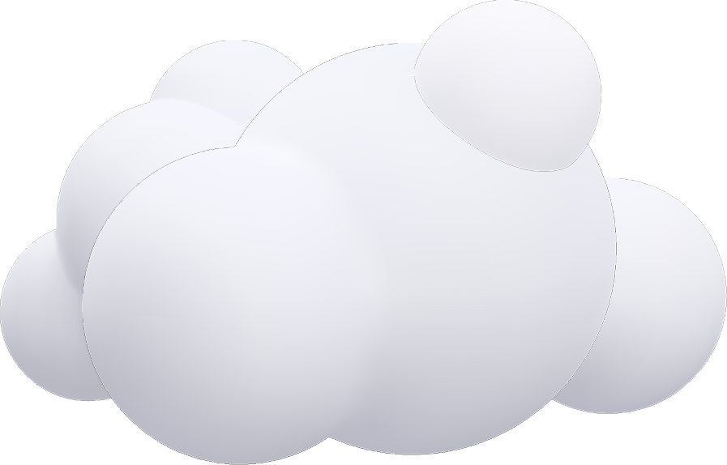
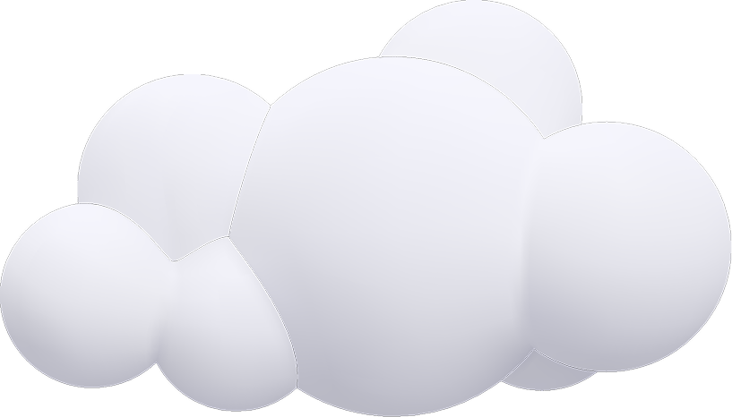

팝업
102,302 그루
2024년 생명의 숲은 지구의 숨결을 되살리고 푸른 내일을
만들기 위해 102,302그루의 나무를 심었습니다.



함께 심고, 함께 자라는 숲의 기록
-
그린짐 이야기
KIST(한국과학기술연구원)에서 나무를 심었어요!
2025.11.05 이기세 KIST(한국과학기술연구원)에서 나무를 심었어요! 가을 햇살이 부드럽게 내리던 10월 30일, 한국과학기술연구원(KIST)의 탄소중립숲에는 다시 한 번 초록의 손길이 닿았습니다. 지난 봄, 그린짐 참여자들이 함께 가꾸었던 공간이 어느새 푸르름을 되찾았고, 이번에는 그 숲 위에 새로운 미래를 심기 위해 우리가 모였습니다.
KIST(한국과학기술연구원)에서 나무를 심었어요! 가을 햇살이 부드럽게 내리던 10월 30일, 한국과학기술연구원(KIST)의 탄소중립숲에는 다시 한 번 초록의 손길이 닿았습니다. 지난 봄, 그린짐 참여자들이 함께 가꾸었던 공간이 어느새 푸르름을 되찾았고, 이번에는 그 숲 위에 새로운 미래를 심기 위해 우리가 모였습니다. -
도시숲
[종로 정원사마을] 건강한 정원문화의 씨앗: 4크4색 가드닝 크루
2025.10.15 김현정 [종로 정원사마을] 건강한 정원문화의 씨앗: 4크4색 가드닝 크루 종로는 전통미와 현대미가 조화를 이루어 특별한 정취를 가진 공간입니다. 우리 종로 정원사마을 사업은 문화유산과 아스팔트 사이를 흙내음으로 보듬기 위해 시작되었습니다.
[종로 정원사마을] 건강한 정원문화의 씨앗: 4크4색 가드닝 크루 종로는 전통미와 현대미가 조화를 이루어 특별한 정취를 가진 공간입니다. 우리 종로 정원사마을 사업은 문화유산과 아스팔트 사이를 흙내음으로 보듬기 위해 시작되었습니다. -
공존숲
생명의숲과 함께한 2025년 유한킴벌리 대학생 그린캠프
2025.09.03 정하나 생명의숲과 함께한 2025년 유한킴벌리 대학생 그린캠프 지난 7월 28일부터 30일까지, ‘우리강산 푸르게 푸르게’ 캠페인의 일환으로 진행된 2025 유한킴벌리 그린캠프가 경상북도 안동, 울진과 강원특별자치도 동해 일대에서 열렸습니다.
생명의숲과 함께한 2025년 유한킴벌리 대학생 그린캠프 지난 7월 28일부터 30일까지, ‘우리강산 푸르게 푸르게’ 캠페인의 일환으로 진행된 2025 유한킴벌리 그린캠프가 경상북도 안동, 울진과 강원특별자치도 동해 일대에서 열렸습니다.